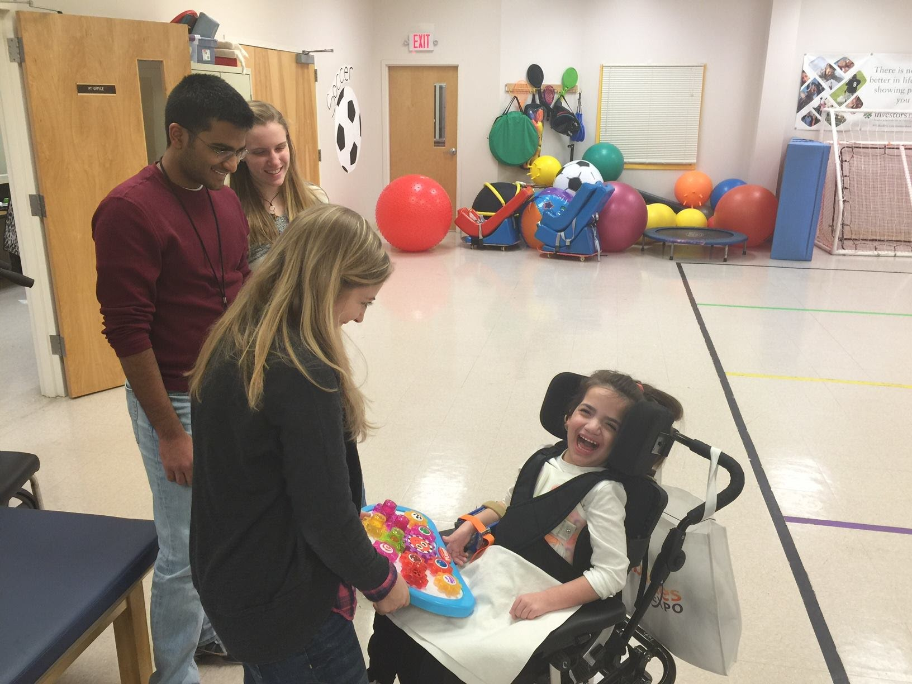

I've always been fascinated by the basic life sciences. Since I arrived, I planned on majoring in Molecular & Cellular Biology. However, a public health research experience examining drug pricing policies at the Johns Hopkins Bloomberg School of Public Health led me to develop a passion for health policy and management. I plan on graduating in May 2020 with a Molecular & Cellular Biology and Public Health Studies double-major.
The Union County Magnet High School is a vocational-technical high school that functions as an engineering-based career academy. My coursework and various experiences at Magnet were instrumental to my strong background in science, mathematics, and technology. During high school, my involvements included the Robotics Club, Science Olympiad, the National Honor Society, and Math League.

My partner, Emma, and I worked with our mentor, Ms. Gerstein, to design and manufacture a forearm support for the power wheelchair using 3D modeling, 3D printing, and laser cutting. After creating a prototype, the team realized that the support was not sturdy enough to withstand normal wear and tear. As a result, we decided to cast a forearm support. 3D modeling was used to make a mold in order to cast the forearm support. The team was ecstatic seeing the student use the forearm support and bring a smile to her face!